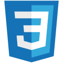
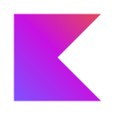
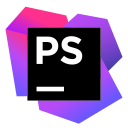
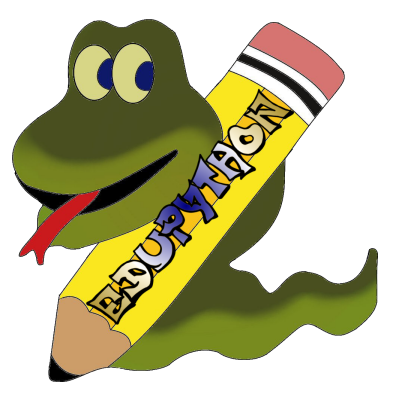
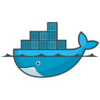
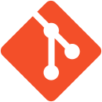
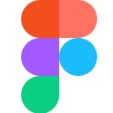
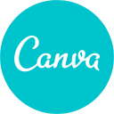

Compétences
Développement Web :
HTML

CSS
JavaScript
PHP
Symfony
Développement Logiciel :
Java
JavaFX
C
Python

Kotlin
XML

Bash
Base de données :
SQL
PostgreSQL
MySQL
UML
Environnements de Développement Intégré (IDE) : IDE :
VSC
WebStorm

PhpStorm
IntelliJ
Android Studio
Eclipse

EduPython
Outils de Virtualisation :

Docker
VirtualBox
Outils Collaboratifs :

Git
Trello
Outils de Conception Graphique :

Figma
